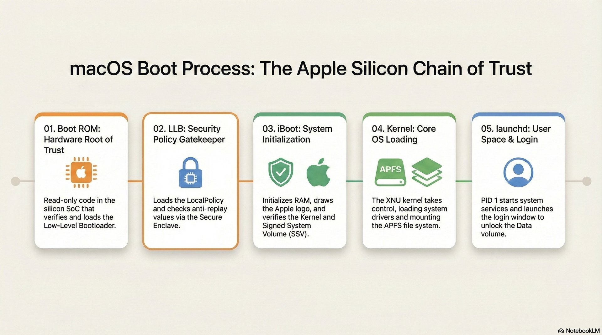
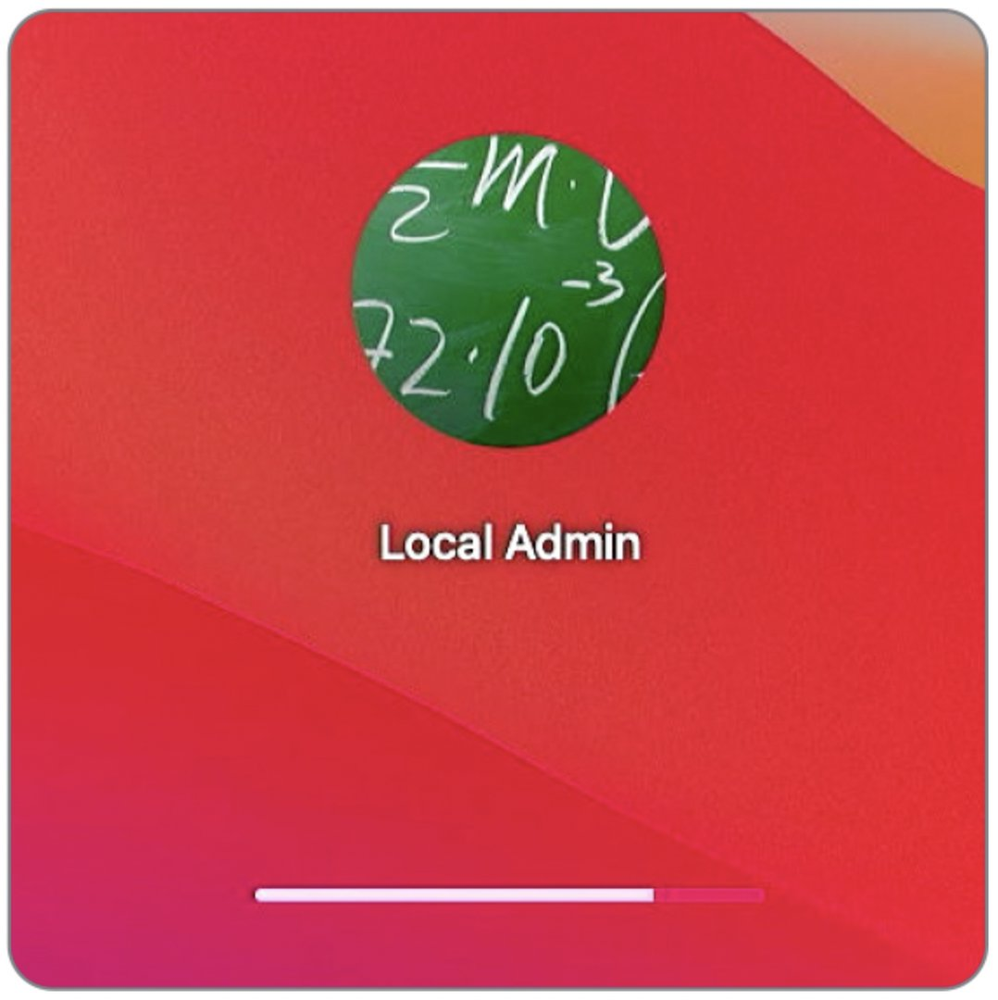
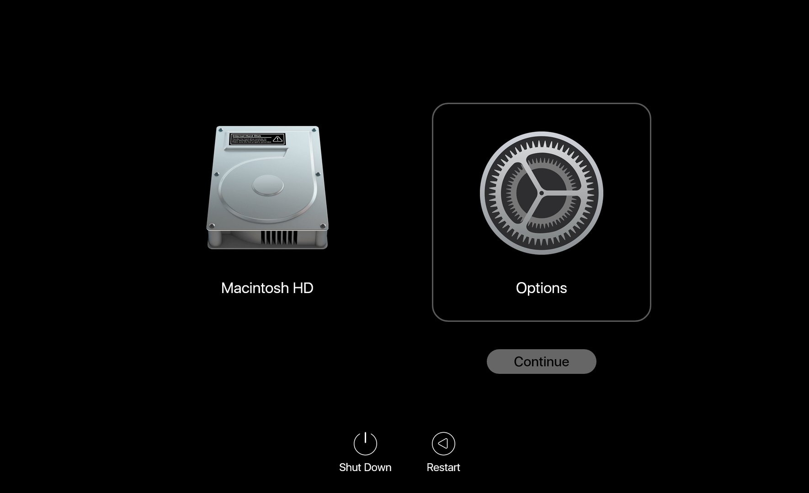

Lesson 13: The Boot Process¶
Part C: Student Learning Guide
Overview¶
Terminology & Concepts¶
Apple Silicon Boot Architecture¶
- Boot ROM - Stage 0: The first code that runs when the Mac powers on, hardcoded into the hardware (Read-Only) and immutable. Its role is to verify (based on Apple's hardware signatures) and load the next stage (LLB). In case of a severe failure, this is the component that places the Mac into DFU mode.
- Low-Level Bootloader / LLB (Stage 1): The low-level boot manager. Its main function is to locate and determine which Volume the Mac should boot from, and to verify its LocalPolicy against the Secure Enclave.
- iBoot - Stage 2: The high-level boot manager (formerly known as "Firmware"). It verifies the hashes of the SSV (Signed System Volume) and securely loads the system Kernel.
→ SSV is covered in-depth in Lesson 06 (FileSystem) — here, iBoot acts as the gatekeeper for the signature before the Kernel boots.
- Kernel - XNU: The core of the macOS operating system. It takes over from iBoot, fully identifies the hardware, and initializes system services and filesystems (APFS).
- DFU Mode - Device Firmware Update: An extreme emergency state (at the Boot ROM level) that allows connecting a non-bootable Mac to a functional Mac using a USB-C cable and Apple Configurator to perform a Firmware Revive or Restore.
Boot Security & Local Policy¶
- Startup Security Utility: The graphical interface available exclusively through macOS Recovery. It is used to configure the security policy of the startup disk.
- Full Security: The highest level of security (and the default). It ensures that only macOS versions that are signed and recognized as safe at the time of installation can run.
- Reduced Security: A lowered security state. It allows the installation of older macOS versions and is a prerequisite for authorizing the loading of third-party Kernel Extensions (Kexts) (either by user approval or an MDM system).
- Permissive Security: An open security state (for developers only). It allows booting a custom, unsigned kernel (requires complete disablement of SIP).
- LocalPolicy: A collection of boot security settings (Secure Boot settings) on a per-Volume basis. This is an encrypted file signed by the SEP, ensuring the system boots with the exact policy approved by an administrator (or MDM).
Extensions & The Kernel¶
- Kernel Extensions - Kexts: Software that runs within the system's kernel space (Ring 0). Apple is gradually deprecating their support, as a Kext crash brings down the entire Mac (Kernel Panic). Loading them requires switching to Reduced Security.
- System Extensions: The modern replacement for Kexts. These extensions run as User Space Processes (inside a "Sandbox"), making them significantly safer. If they crash, the Mac continues to operate normally. (Common types: Network Extensions for VPN/Firewall, Endpoint Security for Antivirus/EDR).
Enterprise Note
Modern security agents (AV/EDR) like CrowdStrike and SentinelOne have already migrated to System Extensions. If a security vendor still requires a Kext, it's a red flag indicating outdated software. Demand an updated version from the vendor before deploying it in your enterprise environment.
- RecoveryOS Password: In the past (on Intel Macs), we used a Firmware Password. With Apple Silicon, you can use an MDM system (via the
SetRecoveryLockcommand) to remotely lock access to the Recovery environment (Startup Options) without a password. - 1TR (One True Recovery): The unified, dedicated recovery environment for Apple Silicon Macs, consolidating all boot options into one place, accessed by a long-press of the power button.
- Fallback Recovery (frOS): The backup (resiliency) mechanism for the primary Recovery environment on Apple Silicon. It is triggered by a double-press (short then long) of the power button. It provides recovery tools in case the primary 1TR is corrupted, but it does not allow changes to the security level (Startup Security Utility).
Key Terminal Commands (CLI Tools)¶
system_profiler - System & Security Environment Reconnaissance¶
Commands that display data also available in System Information, formatted for quick CLI access.
system_profiler SPiBridgeDataType- Action: Displays information about the security and boot component. On Apple Silicon (or Intel with T2), it will show the current security level (Full / Reduced) under
Secure Boot.
- Action: Displays information about the security and boot component. On Apple Silicon (or Intel with T2), it will show the current security level (Full / Reduced) under
system_profiler SPSoftwareDataType- Action: Displays the general startup status. Here you can verify the
Boot Mode(Normal or Safe) and the status ofSystem Integrity Protection(Enabled or Disabled).
- Action: Displays the general startup status. Here you can verify the
bputil - Advanced Boot Policy Management¶
Warning
The bputil command is strictly intended for use within macOS Recovery (or as root on a live system to view info) and allows deep modifications to the LocalPolicy without using the GUI. Incorrect usage can render the Mac unbootable.
→ The Bootstrap Token and FileVault concepts covered in Lesson 04 are what enable an MDM to change the Security Policy remotely — without them, IT personnel must physically access Recovery to alter the security level.
sudo bputil -dorbputil --display-policy- Action: Displays the contents of the LocalPolicy (encryption, Kext status, MDM authorization, etc.) for the local startup disk.
sudo bputil -e- Action: Displays policies for all existing installations on the Mac (if multiple operating systems are present).
bputil -forbputil --full-security- Action: Enforces Full Security (globally revokes all reduced security settings).
bputil -gorbputil --reduced-security- Action: Changes the security level to Reduced Security only.
bputil -korbputil --enable-kexts- Action: Enables support for third-party kernel extensions (automatically shifts to Reduced Security if needed).
bputil -morbputil --enable-mdm- Action: Authorizes MDM to manage software and kernel extension updates without local user interaction (places the LocalPolicy into a state that recognizes MDM authority over the Boot process).
(Note: Modification commands with bputil usually require an admin password or exact disk selection by providing the UUID using the diskutil apfs listVolumeGroups command).
kmutil - Kernel Management Utility¶
kmutil showloaded- Action: Displays a complete list of all kernel extensions currently loaded at runtime (replaces the legacy
kextstatcommand).
- Action: Displays a complete list of all kernel extensions currently loaded at runtime (replaces the legacy
kmutil trigger-panic-medic- Action: A dedicated emergency command for Recovery Mode. Intended for situations where a third-party extension traps the Mac in a Boot Loop. It overrides the formal deletion of dependent Kexts and allows the Mac to boot safely. (You must specify the volume root, e.g.,
kmutil trigger-panic-medic --volume-root /Volumes/Macintosh\ HD).
- Action: A dedicated emergency command for Recovery Mode. Intended for situations where a third-party extension traps the Mac in a Boot Loop. It overrides the formal deletion of dependent Kexts and allows the Mac to boot safely. (You must specify the volume root, e.g.,
csrutil - System Integrity Protection (SIP) Management¶
Executed from Terminal in Recovery Mode only to apply changes.
csrutil status- Checks current status (enabled/disabled). Can be run in a live system.csrutil disable- Completely disables SIP protections (not recommended except for development and clinical investigation purposes).csrutil enable- Restores SIP protection.
Frequently Asked Questions (FAQ)¶
- Q: Can I set a Firmware Password on an Apple Silicon Mac to prevent booting from an external drive?
- A: No. Apple removed Firmware Password support on Apple Silicon because security is baked directly into the SoC, requiring user authentication (Volume Ownership) before any security changes. In an enterprise, the solution is configuring a
RecoveryOS Passwordvia MDM to remotely lock access to the Startup Options menu itself.
- A: No. Apple removed Firmware Password support on Apple Silicon because security is baked directly into the SoC, requiring user authentication (Volume Ownership) before any security changes. In an enterprise, the solution is configuring a
- Q: An enterprise sync app (like Google Drive or OneDrive) is prompting to install a Kernel Extension. Should I allow it?
- A: Since macOS Monterey/Ventura, this is no longer necessary! File sync apps have migrated to the File Provider API, which is a System Extension running in User Space and does not require downgrading to Reduced Security. It's highly recommended to demand the updated version from the vendor.
- Q: What should I do when the Mac constantly crashes immediately upon boot (Boot Loop / Kernel Panic) and fails to load the OS?
- A: The first step is to boot into Safe Mode, which prevents third-party Kexts from loading (and clears caches). If the issue is indeed an outdated Kext, the Mac will boot. A more advanced solution is booting into Recovery and running the
kmutil trigger-panic-mediccommand in Terminal.
- A: The first step is to boot into Safe Mode, which prevents third-party Kexts from loading (and clears caches). If the issue is indeed an outdated Kext, the Mac will boot. A more advanced solution is booting into Recovery and running the
Recommended Links & Further Reading¶
- Startup Disk security policy control for a Mac - A technical article explaining why and how security levels are reduced to load hardware extensions (Kexts).
- Boot process for a Mac with Apple silicon - An official deep-dive document on the boot chain of Apple Silicon processors.
- Booting an M1 Mac from hardware to kexts: 1 Hardware - An article exploring the earliest hardware initialization stages during the boot process.
- Booting an M1 Mac from hardware to kexts: 2 LLB and iBoot - The second part of the article reviewing the OS loading process from storage.
Summary Video¶
Presentation Visuals
You can reference the following images from the course guide (Asset A) for this topic:
* L13_LegacySlide_Slide138_image169.png
* L13_LegacySlide_Slide138_image49.jpeg
* L13_LegacySlide_Slide141_image170.jpg
* L13_LegacySlide_Slide142_image171.png
* L13_LegacySlide_Slide142_image172.png
* L13_LegacySlide_Slide142_image173.png
* L13_LegacySlide_Slide142_image174.png
* L13_LegacySlide_Slide142_image175.png
* L13_LegacySlide_Slide142_image176.png
* L13_LegacySlide_Slide142_image177.jpg
* L13_LegacySlide_Slide80_image19.jpg
* L13_LegacySlide_Slide80_image93.png
* L13_TahoeUI_26-Tahoe-Boot-Camp-scaled.png
Visual Aids¶
Visual Demonstration (Student Aid)
These images illustrate the relevant interface or mechanism for the lesson topic.






